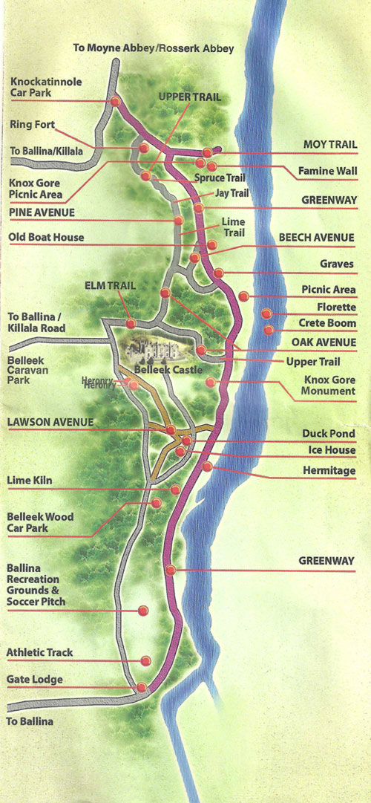

Home
Trail Map
Wheelchair Facilities
Wildlife
Trees and Plants
History
Donate

The Belleek Woods Heritage Trail
The heritage trail consisits of 34 marked stops that highlight some of the historical points of interest and the key tree speices in the wood.The trail starts in the main car-park. Map below.
Belleek Woods Car Park